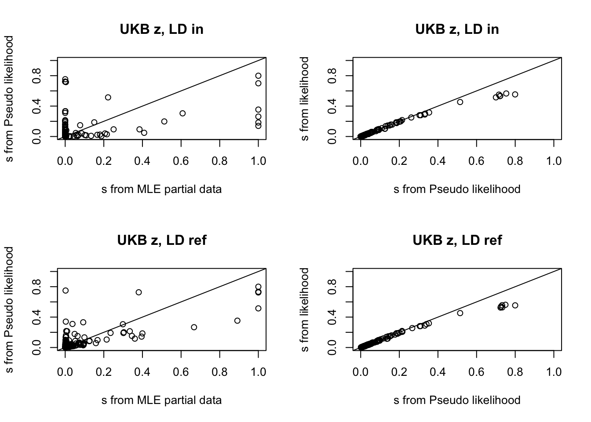

Last updated: 2021-04-28
Checks: 7 0
Knit directory: susierss_diagnostic/
This reproducible R Markdown analysis was created with workflowr (version 1.6.2). The Checks tab describes the reproducibility checks that were applied when the results were created. The Past versions tab lists the development history.
Great! Since the R Markdown file has been committed to the Git repository, you know the exact version of the code that produced these results.
Great job! The global environment was empty. Objects defined in the global environment can affect the analysis in your R Markdown file in unknown ways. For reproduciblity it’s best to always run the code in an empty environment.
The command set.seed(20201222) was run prior to running the code in the R Markdown file. Setting a seed ensures that any results that rely on randomness, e.g. subsampling or permutations, are reproducible.
Great job! Recording the operating system, R version, and package versions is critical for reproducibility.
Nice! There were no cached chunks for this analysis, so you can be confident that you successfully produced the results during this run.
Great job! Using relative paths to the files within your workflowr project makes it easier to run your code on other machines.
Great! You are using Git for version control. Tracking code development and connecting the code version to the results is critical for reproducibility.
The results in this page were generated with repository version a8c6f07. See the Past versions tab to see a history of the changes made to the R Markdown and HTML files.
Note that you need to be careful to ensure that all relevant files for the analysis have been committed to Git prior to generating the results (you can use wflow_publish or wflow_git_commit). workflowr only checks the R Markdown file, but you know if there are other scripts or data files that it depends on. Below is the status of the Git repository when the results were generated:
Ignored files:
Ignored: .Rhistory
Ignored: .Rproj.user/
Ignored: output/.DS_Store
Untracked files:
Untracked: output/simulation_null_CLM_post.rds
Unstaged changes:
Modified: analysis/diagnostic_ukb_lr_null_sigma21.Rmd
Modified: analysis/diagnostic_ukb_lr_signal_eg.Rmd
Note that any generated files, e.g. HTML, png, CSS, etc., are not included in this status report because it is ok for generated content to have uncommitted changes.
These are the previous versions of the repository in which changes were made to the R Markdown (analysis/diagnostic_ukb_lr_signal.Rmd) and HTML (docs/diagnostic_ukb_lr_signal.html) files. If you’ve configured a remote Git repository (see ?wflow_git_remote), click on the hyperlinks in the table below to view the files as they were in that past version.
| File | Version | Author | Date | Message |
|---|---|---|---|---|
| Rmd | a8c6f07 | zouyuxin | 2021-04-28 | wflow_publish(“analysis/diagnostic_ukb_lr_signal.Rmd”) |
We want to
Check the consistency between z scores and LD matrix using \(s\);
Detect allele switch issue (flipped sign in z score) using conditional distribution.
In diagnostic, we assume the following model, \[ \hat{z} \sim N(0, (1-s) R + s I), 0 \leq s \leq 1. \]
The posterior distribution of \(\hat{z}_j | \hat{z}_{-j}\) is: \[ \hat{z}_j | \hat{z}_{-j} \sim N(-\frac{1}{\Omega_{jj}} \Omega_{j,-j} \hat{z}_{-j},1/\Omega_{jj}), \Omega = ((1-s) R + s I)^{-1}. \]
From the simulation, the standardized differences between observed z score and the conditional mean has longer-tailed than N(0,1). We use a mixture of normals to model the heavier tail empirically. We model the conditional distribution as \[
\hat{z}_j | \hat{z}_{-j} \sim \sum_{k=1}^{K} \pi_k N(-\frac{1}{\Omega_{jj}} \Omega_{j,-j} \hat{z}_{-j},\frac{\sigma_k^2}{\Omega_{jj}}).
\] The \(\sigma_k\) is a fixed dense grid, the minimum value is \(0.8\), the maximum value is \(2\sqrt{max(\text{standardized difference}^2)}\). We estimate \(\pi_k\) using mixsqp. The likelihood ratio test is based on the mixture distribution.
To check whether there is an allele switch issue, we test the hypothesis \(H_0:\) the sign of \(\hat{z}_j\) is correct, vs \(H_1:\) the sign of \(\hat{z}_j\) is flipped. The likelihood ratio is \[ LR = \frac{p(-\hat{z}_j | \hat{z}_{-j})}{p(\hat{z}_j | \hat{z}_{-j})} \]
There are several ways to estimate \(s\).
Let \(R = U D U^\intercal\) be eigen-decomposition of \(R\), \(D\) has \(p_1\) positive diagonal elements, \(U = [U_1 \ U_2]\), \(U_1\) is a \(p\) by \(p_1\) matrix, \(U_2\) is a \(p\) by \(p_2=p-p_1\) matrix. We transform \(\hat{z}\) into null space of \(R\) by multiplying \(U_2^\intercal\) \[ U_2^T \hat{z} \sim N(0, s I_{p_2}). \] Therefore, the MLE for \(s\) using partial data is \(\frac{1}{p_2} \hat{z}^\intercal U_2 U_2^\intercal \hat{z}\). If \(s > 1\), we set it to 1.
We estimate \(s\) by maximizing pseudo-likelihood, \[ l(s) = \sum_{j=1}^{p} \log p(\hat{z}_j | \hat{z}_{-j}), 0 \leq s \leq 1. \]
We estimate \(s\) by maximizing \[ \hat{z} \sim N(0, (1-s) R + s I), 0 \leq s \leq 1. \]
Simulation Setting
In the following simulation, we extract 200 regions from UKB. We sample 10,000 UKB individuals to simulate z scores and generate LD in. We simulate data without signal and with one signal (PVE 0.02). We sample 1,000 UKB individuals as reference panel. To get GWAS from another population, we use White blood cell count GWAS from BBJ (107,964 samples). There are 1000 SNPs in each region.
library(tibble)
library(dplyr)
out = readRDS('data/susierss_diagnostic_ukb_query.rds')
out = as_tibble(out)
out_signal_ukb_in_1 = out %>% filter(simulate.n_signal == 1, flip_z.flip == FALSE,
diagnostic.z_type == 'ukb', diagnostic.ld_type == 'sample',
diagnostic.method == 'restricted')
out_signal_ukb_in_2 = out %>% filter(simulate.n_signal == 1, flip_z.flip == FALSE,
diagnostic.z_type == 'ukb', diagnostic.ld_type == 'sample',
diagnostic.method == 'pseudo')
out_signal_ukb_in_3 = out %>% filter(simulate.n_signal == 1, flip_z.flip == FALSE,
diagnostic.z_type == 'ukb', diagnostic.ld_type == 'sample',
diagnostic.method == 'likelihood')
out_signal_ukb_ref_1 = out %>% filter(simulate.n_signal == 1, flip_z.flip == FALSE,
diagnostic.z_type == 'ukb', diagnostic.ld_type == 'ref',
diagnostic.method == 'restricted')
out_signal_ukb_ref_2 = out %>% filter(simulate.n_signal == 1, flip_z.flip == FALSE,
diagnostic.z_type == 'ukb', diagnostic.ld_type == 'ref',
diagnostic.method == 'pseudo')
out_signal_ukb_ref_3 = out %>% filter(simulate.n_signal == 1, flip_z.flip == FALSE,
diagnostic.z_type == 'ukb', diagnostic.ld_type == 'ref',
diagnostic.method == 'likelihood')
out_signal_ukb_flipnull_in_1 = out %>% filter(simulate.n_signal == 1, flip_z.flip == TRUE, flip_z.flip_pos == 'null',
diagnostic.z_type == 'ukb', diagnostic.ld_type == 'sample',
diagnostic.method == 'restricted')
out_signal_ukb_flipnull_in_2 = out %>% filter(simulate.n_signal == 1, flip_z.flip == TRUE, flip_z.flip_pos == 'null',
diagnostic.z_type == 'ukb', diagnostic.ld_type == 'sample',
diagnostic.method == 'pseudo')
out_signal_ukb_flipnull_in_3 = out %>% filter(simulate.n_signal == 1, flip_z.flip == TRUE, flip_z.flip_pos == 'null',
diagnostic.z_type == 'ukb', diagnostic.ld_type == 'sample',
diagnostic.method == 'likelihood')
out_signal_ukb_flipnull_ref_1 = out %>% filter(simulate.n_signal == 1, flip_z.flip == TRUE, flip_z.flip_pos == 'null',
diagnostic.z_type == 'ukb', diagnostic.ld_type == 'ref',
diagnostic.method == 'restricted')
out_signal_ukb_flipnull_ref_2 = out %>% filter(simulate.n_signal == 1, flip_z.flip == TRUE, flip_z.flip_pos == 'null',
diagnostic.z_type == 'ukb', diagnostic.ld_type == 'ref',
diagnostic.method == 'pseudo')
out_signal_ukb_flipnull_ref_3 = out %>% filter(simulate.n_signal == 1, flip_z.flip == TRUE, flip_z.flip_pos == 'null',
diagnostic.z_type == 'ukb', diagnostic.ld_type == 'ref',
diagnostic.method == 'likelihood')
out_signal_ukb_flipsignal_in_1 = out %>% filter(simulate.n_signal == 1, flip_z.flip == TRUE,
flip_z.flip_pos == 'signal',diagnostic.z_type == 'ukb',
diagnostic.ld_type == 'sample',
diagnostic.method == 'restricted')
out_signal_ukb_flipsignal_in_2 = out %>% filter(simulate.n_signal == 1, flip_z.flip == TRUE,
flip_z.flip_pos == 'signal',diagnostic.z_type == 'ukb',
diagnostic.ld_type == 'sample',
diagnostic.method == 'pseudo')
out_signal_ukb_flipsignal_in_3 = out %>% filter(simulate.n_signal == 1, flip_z.flip == TRUE,
flip_z.flip_pos == 'signal',diagnostic.z_type == 'ukb',
diagnostic.ld_type == 'sample',
diagnostic.method == 'likelihood')
out_signal_ukb_flipsignal_ref_1 = out %>% filter(simulate.n_signal == 1, flip_z.flip == TRUE,
flip_z.flip_pos == 'signal',diagnostic.z_type == 'ukb',
diagnostic.ld_type == 'ref',
diagnostic.method == 'restricted')
out_signal_ukb_flipsignal_ref_2 = out %>% filter(simulate.n_signal == 1, flip_z.flip == TRUE,
flip_z.flip_pos == 'signal',diagnostic.z_type == 'ukb',
diagnostic.ld_type == 'ref',
diagnostic.method == 'pseudo')
out_signal_ukb_flipsignal_ref_3 = out %>% filter(simulate.n_signal == 1, flip_z.flip == TRUE,
flip_z.flip_pos == 'signal',diagnostic.z_type == 'ukb',
diagnostic.ld_type == 'ref',
diagnostic.method == 'likelihood')
out_bbj_ref_1 = out %>% filter(simulate.n_signal == 0, flip_z.flip == FALSE, flip_z.flip_pos == 'null',
diagnostic.z_type == 'bbj', diagnostic.ld_type == 'ref',
diagnostic.method == 'restricted')
out_bbj_ref_2 = out %>% filter(simulate.n_signal == 0, flip_z.flip == FALSE, flip_z.flip_pos == 'null',
diagnostic.z_type == 'bbj', diagnostic.ld_type == 'ref',
diagnostic.method == 'pseudo')
out_bbj_ref_3 = out %>% filter(simulate.n_signal == 0, flip_z.flip == FALSE, flip_z.flip_pos == 'null',
diagnostic.z_type == 'bbj', diagnostic.ld_type == 'ref',
diagnostic.method == 'likelihood')
out_bbj_ref_flip_1 = out %>% filter(simulate.n_signal == 0, flip_z.flip == TRUE, flip_z.flip_pos == 'null',
diagnostic.z_type == 'bbj', diagnostic.ld_type == 'ref',
diagnostic.method == 'restricted')
out_bbj_ref_flip_2 = out %>% filter(simulate.n_signal == 0, flip_z.flip == TRUE, flip_z.flip_pos == 'null',
diagnostic.z_type == 'bbj', diagnostic.ld_type == 'ref',
diagnostic.method == 'pseudo')
out_bbj_ref_flip_3 = out %>% filter(simulate.n_signal == 0, flip_z.flip == TRUE, flip_z.flip_pos == 'null',
diagnostic.z_type == 'bbj', diagnostic.ld_type == 'ref',
diagnostic.method == 'likelihood')out_signal_ukb_in_1_s = apply(out_signal_ukb_in_1, 1, function(x) x$diagnostic.res$s)
out_signal_ukb_in_2_s = apply(out_signal_ukb_in_2, 1, function(x) x$diagnostic.res$s)
out_signal_ukb_in_3_s = apply(out_signal_ukb_in_3, 1, function(x) x$diagnostic.res$s)
out_signal_ukb_ref_1_s = apply(out_signal_ukb_ref_1, 1, function(x) x$diagnostic.res$s)
out_signal_ukb_ref_2_s = apply(out_signal_ukb_ref_2, 1, function(x) x$diagnostic.res$s)
out_signal_ukb_ref_3_s = apply(out_signal_ukb_ref_3, 1, function(x) x$diagnostic.res$s)
par(mfrow=c(1,3))
plot(out_signal_ukb_in_1_s, out_signal_ukb_ref_1_s, xlab = 'UKB z, LD in', ylab='UKB z, LD ref', main='MLE partial data')
abline(0,1)
plot(out_signal_ukb_in_2_s, out_signal_ukb_ref_2_s, xlab = 'UKB z, LD in', ylab='UKB z, LD ref', main='Pseudo likelihood')
abline(0,1)
plot(out_signal_ukb_in_3_s, out_signal_ukb_ref_3_s, xlab = 'UKB z, LD in', ylab='UKB z, LD ref', main='likelihood')
abline(0,1)par(mfrow=c(1,2))
plot(out_signal_ukb_ref_1_s, out_signal_ukb_ref_2_s, xlab = 's from MLE partial data', ylab = 's from Pseudo likelihood',
main = 'UKB z, LD ref')
abline(0,1)
plot(out_signal_ukb_ref_2_s, out_signal_ukb_ref_3_s, xlab = 's from Pseudo likelihood', ylab = 's from likelihood',
main = 'UKB z, LD ref')
abline(0,1)Speed
sp = rbind(summary(out_signal_ukb_in_1$diagnostic.DSC_TIME),
summary(out_signal_ukb_in_2$diagnostic.DSC_TIME),
summary(out_signal_ukb_in_3$diagnostic.DSC_TIME))
rownames(sp) = c('MLEpartial', 'pseudo likelihood', 'likelihood')
sp Min. 1st Qu. Median Mean 3rd Qu. Max.
MLEpartial 0.931 1.0180 1.0440 1.064205 1.09100 1.450
pseudo likelihood 4.707 5.3070 5.6455 5.756775 6.28875 6.666
likelihood 1.267 1.6225 1.6770 1.680470 1.75500 2.036z = unlist(lapply(out_signal_ukb_in_1$diagnostic.res, function(x) x$post$z))
out_signal_ukb_in_1_z = unlist(lapply(out_signal_ukb_in_1$diagnostic.res, function(x) x$post$post_z))
out_signal_ukb_in_1_lr = unlist(lapply(out_signal_ukb_in_1$diagnostic.res, function(x) x$post$logLR))
out_signal_ukb_in_1_lrmix = unlist(lapply(out_signal_ukb_in_1$diagnostic.res, function(x) x$post$logLRmix))
out_signal_ukb_in_1_lrmix[is.infinite(out_signal_ukb_in_1_lrmix)] = -1500
out_signal_ukb_in_3_z = unlist(lapply(out_signal_ukb_in_3$diagnostic.res, function(x) x$post$post_z))
out_signal_ukb_in_3_lr = unlist(lapply(out_signal_ukb_in_3$diagnostic.res, function(x) x$post$logLR))
out_signal_ukb_in_3_lrmix = unlist(lapply(out_signal_ukb_in_3$diagnostic.res, function(x) x$post$logLRmix))
out_signal_ukb_in_3_lrmix[is.infinite(out_signal_ukb_in_3_lrmix)] = -1500
out_signal_ukb_ref_1_z = unlist(lapply(out_signal_ukb_ref_1$diagnostic.res, function(x) x$post$post_z))
out_signal_ukb_ref_1_lr = unlist(lapply(out_signal_ukb_ref_1$diagnostic.res, function(x) x$post$logLR))
out_signal_ukb_ref_1_lrmix = unlist(lapply(out_signal_ukb_ref_1$diagnostic.res, function(x) x$post$logLRmix))
out_signal_ukb_ref_1_lrmix[is.infinite(out_signal_ukb_ref_1_lrmix)] = -1500
out_signal_ukb_ref_3_z = unlist(lapply(out_signal_ukb_ref_3$diagnostic.res, function(x) x$post$post_z))
out_signal_ukb_ref_3_lr = unlist(lapply(out_signal_ukb_ref_3$diagnostic.res, function(x) x$post$logLR))
out_signal_ukb_ref_3_lrmix = unlist(lapply(out_signal_ukb_ref_3$diagnostic.res, function(x) x$post$logLRmix))
out_signal_ukb_ref_3_lrmix[is.infinite(out_signal_ukb_ref_3_lrmix)] = -1500We focus on those z scores with magnitude greater than 2.
zlarge = which(abs(z) > 2)
par(mfrow=c(1,2))
plot(out_signal_ukb_in_1_lrmix[zlarge], out_signal_ukb_in_3_lrmix[zlarge], xlim = c(-50,10), ylim = c(-50,10),
xlab = 'logLR using s from MLE partial data', ylab = 'logLR using s from likelihood',
main = 'UKB z, LD in')
abline(0,1)
abline(h=0, lty=2)
abline(v=0, lty=2)
plot(out_signal_ukb_ref_1_lrmix[zlarge], out_signal_ukb_ref_3_lrmix[zlarge], xlim = c(-50,10), ylim = c(-50,10),
xlab = 'logLR using s from MLE partial data', ylab = 'logLR using s from likelihood',
main = 'UKB z, LD ref')
abline(0,1)
abline(h=0, lty=2)
abline(v=0, lty=2)Based on simulation 2.1, we flipped sign of signal.
out_signal_ukb_flipsignal_in_1_s = apply(out_signal_ukb_flipsignal_in_1, 1, function(x) x$diagnostic.res$s)
out_signal_ukb_flipsignal_in_2_s = apply(out_signal_ukb_flipsignal_in_2, 1, function(x) x$diagnostic.res$s)
out_signal_ukb_flipsignal_in_3_s = apply(out_signal_ukb_flipsignal_in_3, 1, function(x) x$diagnostic.res$s)
out_signal_ukb_flipsignal_ref_1_s = apply(out_signal_ukb_flipsignal_ref_1, 1, function(x) x$diagnostic.res$s)
out_signal_ukb_flipsignal_ref_2_s = apply(out_signal_ukb_flipsignal_ref_2, 1, function(x) x$diagnostic.res$s)
out_signal_ukb_flipsignal_ref_3_s = apply(out_signal_ukb_flipsignal_ref_3, 1, function(x) x$diagnostic.res$s)
par(mfrow=c(1,3))
plot(out_signal_ukb_flipsignal_in_1_s, out_signal_ukb_flipsignal_ref_1_s, xlab = 'UKB z, LD in', ylab='UKB z, LD ref', main='MLE partial data')
abline(0,1)
plot(out_signal_ukb_flipsignal_in_2_s, out_signal_ukb_flipsignal_ref_2_s, xlab = 'UKB z, LD in', ylab='UKB z, LD ref', main='Pseudo likelihood')
abline(0,1)
plot(out_signal_ukb_flipsignal_in_3_s, out_signal_ukb_flipsignal_ref_3_s, xlab = 'UKB z, LD in', ylab='UKB z, LD ref', main='likelihood')
abline(0,1)par(mfrow=c(2,2))
plot(out_signal_ukb_flipsignal_in_1_s, out_signal_ukb_flipsignal_in_2_s, xlab = 's from MLE partial data', ylab = 's from Pseudo likelihood',
main = 'UKB z, LD in', xlim=c(0,1), ylim=c(0,1))
abline(0,1)
plot(out_signal_ukb_flipsignal_in_2_s, out_signal_ukb_flipsignal_in_3_s, xlab = 's from Pseudo likelihood', ylab = 's from likelihood',
main = 'UKB z, LD in', xlim=c(0,1), ylim=c(0,1))
abline(0,1)
plot(out_signal_ukb_flipsignal_ref_1_s, out_signal_ukb_flipsignal_ref_2_s, xlab = 's from MLE partial data', ylab = 's from Pseudo likelihood',
main = 'UKB z, LD ref', xlim=c(0,1), ylim=c(0,1))
abline(0,1)
plot(out_signal_ukb_flipsignal_ref_2_s, out_signal_ukb_flipsignal_ref_3_s, xlab = 's from Pseudo likelihood', ylab = 's from likelihood',
main = 'UKB z, LD ref', xlim=c(0,1), ylim=c(0,1))
abline(0,1)z_flip = unlist(lapply(out_signal_ukb_flipsignal_in_1$diagnostic.res, function(x) x$post$z))
out_signal_ukb_flipsignal_in_1_z = unlist(lapply(out_signal_ukb_flipsignal_in_1$diagnostic.res, function(x) x$post$post_z))
out_signal_ukb_flipsignal_in_1_lr = unlist(lapply(out_signal_ukb_flipsignal_in_1$diagnostic.res, function(x) x$post$logLR))
out_signal_ukb_flipsignal_in_1_lrmix = unlist(lapply(out_signal_ukb_flipsignal_in_1$diagnostic.res, function(x) x$post$logLRmix))
out_signal_ukb_flipsignal_in_1_lrmix[is.infinite(out_signal_ukb_flipsignal_in_1_lrmix)] = -1500
out_signal_ukb_flipsignal_in_3_z = unlist(lapply(out_signal_ukb_flipsignal_in_3$diagnostic.res, function(x) x$post$post_z))
out_signal_ukb_flipsignal_in_3_lr = unlist(lapply(out_signal_ukb_flipsignal_in_3$diagnostic.res, function(x) x$post$logLR))
out_signal_ukb_flipsignal_in_3_lrmix = unlist(lapply(out_signal_ukb_flipsignal_in_3$diagnostic.res, function(x) x$post$logLRmix))
out_signal_ukb_flipsignal_in_3_lrmix[is.infinite(out_signal_ukb_flipsignal_in_3_lrmix)] = -1500
out_signal_ukb_flipsignal_ref_1_z = unlist(lapply(out_signal_ukb_flipsignal_ref_1$diagnostic.res, function(x) x$post$post_z))
out_signal_ukb_flipsignal_ref_1_lr = unlist(lapply(out_signal_ukb_flipsignal_ref_1$diagnostic.res, function(x) x$post$logLR))
out_signal_ukb_flipsignal_ref_1_lrmix = unlist(lapply(out_signal_ukb_flipsignal_ref_1$diagnostic.res, function(x) x$post$logLRmix))
out_signal_ukb_flipsignal_ref_1_lrmix[is.infinite(out_signal_ukb_flipsignal_ref_1_lrmix)] = -1500
out_signal_ukb_flipsignal_ref_3_z = unlist(lapply(out_signal_ukb_flipsignal_ref_3$diagnostic.res, function(x) x$post$post_z))
out_signal_ukb_flipsignal_ref_3_lr = unlist(lapply(out_signal_ukb_flipsignal_ref_3$diagnostic.res, function(x) x$post$logLR))
out_signal_ukb_flipsignal_ref_3_lrmix = unlist(lapply(out_signal_ukb_flipsignal_ref_3$diagnostic.res, function(x) x$post$logLRmix))
out_signal_ukb_flipsignal_ref_3_lrmix[is.infinite(out_signal_ukb_flipsignal_ref_3_lrmix)] = -1500idx = which(z != z_flip)
par(mfrow=c(1,2))
plot(out_signal_ukb_flipsignal_in_1_lrmix[zlarge], out_signal_ukb_flipsignal_in_3_lrmix[zlarge], xlim = c(-20,20), ylim = c(-20,20),
xlab = 'logLRmix using s from MLE partial data', ylab = 'logLRmix using s from likelihood',
main = 'UKB z, LD in')
points(out_signal_ukb_flipsignal_in_1_lrmix[intersect(idx, zlarge)], out_signal_ukb_flipsignal_in_3_lrmix[intersect(idx, zlarge)], col='red', pch=16)
abline(0,1)
abline(h=0, lty=2)
abline(v=0, lty=2)
plot(out_signal_ukb_flipsignal_ref_1_lrmix[zlarge], out_signal_ukb_flipsignal_ref_3_lrmix[zlarge], xlim = c(-20,15), ylim = c(-20,15),
xlab = 'logLRmix using s from MLE partial data', ylab = 'logLRmix using s from likelihood',
main = 'UKB z, LD ref')
points(out_signal_ukb_flipsignal_ref_1_lrmix[intersect(idx, zlarge)],
out_signal_ukb_flipsignal_ref_3_lrmix[intersect(idx, zlarge)], col='red', pch=16)
abline(0,1)
abline(h=0, lty=2)
abline(v=0, lty=2)Based on Simulation 2.1, we randomly flipped sign of one non-signal z score.
out_signal_ukb_flipnull_in_1_s = apply(out_signal_ukb_flipnull_in_1, 1, function(x) x$diagnostic.res$s)
out_signal_ukb_flipnull_in_2_s = apply(out_signal_ukb_flipnull_in_2, 1, function(x) x$diagnostic.res$s)
out_signal_ukb_flipnull_in_3_s = apply(out_signal_ukb_flipnull_in_3, 1, function(x) x$diagnostic.res$s)
out_signal_ukb_flipnull_ref_1_s = apply(out_signal_ukb_flipnull_ref_1, 1, function(x) x$diagnostic.res$s)
out_signal_ukb_flipnull_ref_2_s = apply(out_signal_ukb_flipnull_ref_2, 1, function(x) x$diagnostic.res$s)
out_signal_ukb_flipnull_ref_3_s = apply(out_signal_ukb_flipnull_ref_3, 1, function(x) x$diagnostic.res$s)
par(mfrow=c(1,3))
plot(out_signal_ukb_flipnull_in_1_s, out_signal_ukb_flipnull_ref_1_s, xlab = 'UKB z, LD in', ylab='UKB z, LD ref', main='MLE partial data')
abline(0,1)
plot(out_signal_ukb_flipnull_in_2_s, out_signal_ukb_flipnull_ref_2_s, xlab = 'UKB z, LD in', ylab='UKB z, LD ref', main='Pseudo likelihood')
abline(0,1)
plot(out_signal_ukb_flipnull_in_3_s, out_signal_ukb_flipnull_ref_3_s, xlab = 'UKB z, LD in', ylab='UKB z, LD ref', main='likelihood')
abline(0,1)par(mfrow=c(2,2))
plot(out_signal_ukb_flipnull_in_1_s, out_signal_ukb_flipnull_in_2_s, xlab = 's from MLE partial data', ylab = 's from Pseudo likelihood',
main = 'UKB z, LD in', xlim=c(0,1), ylim=c(0,1))
abline(0,1)
plot(out_signal_ukb_flipnull_in_2_s, out_signal_ukb_flipnull_in_3_s, xlab = 's from Pseudo likelihood', ylab = 's from likelihood',
main = 'UKB z, LD in', xlim=c(0,1), ylim=c(0,1))
abline(0,1)
plot(out_signal_ukb_flipnull_ref_1_s, out_signal_ukb_flipnull_ref_2_s, xlab = 's from MLE partial data', ylab = 's from Pseudo likelihood',
main = 'UKB z, LD ref', xlim=c(0,1), ylim=c(0,1))
abline(0,1)
plot(out_signal_ukb_flipnull_ref_2_s, out_signal_ukb_flipnull_ref_3_s, xlab = 's from Pseudo likelihood', ylab = 's from likelihood',
main = 'UKB z, LD ref', xlim=c(0,1), ylim=c(0,1))
abline(0,1)
z_flip = unlist(lapply(out_signal_ukb_flipnull_in_1$diagnostic.res, function(x) x$post$z))
out_signal_ukb_flipnull_in_1_z = unlist(lapply(out_signal_ukb_flipnull_in_1$diagnostic.res, function(x) x$post$post_z))
out_signal_ukb_flipnull_in_1_lr = unlist(lapply(out_signal_ukb_flipnull_in_1$diagnostic.res, function(x) x$post$logLR))
out_signal_ukb_flipnull_in_1_lrmix = unlist(lapply(out_signal_ukb_flipnull_in_1$diagnostic.res, function(x) x$post$logLRmix))
out_signal_ukb_flipnull_in_1_lrmix[is.infinite(out_signal_ukb_flipnull_in_1_lrmix)] = -1500
out_signal_ukb_flipnull_in_3_z = unlist(lapply(out_signal_ukb_flipnull_in_3$diagnostic.res, function(x) x$post$post_z))
out_signal_ukb_flipnull_in_3_lr = unlist(lapply(out_signal_ukb_flipnull_in_3$diagnostic.res, function(x) x$post$logLR))
out_signal_ukb_flipnull_in_3_lrmix = unlist(lapply(out_signal_ukb_flipnull_in_3$diagnostic.res, function(x) x$post$logLRmix))
out_signal_ukb_flipnull_in_3_lrmix[is.infinite(out_signal_ukb_flipnull_in_3_lrmix)] = -1500
out_signal_ukb_flipnull_ref_1_z = unlist(lapply(out_signal_ukb_flipnull_ref_1$diagnostic.res, function(x) x$post$post_z))
out_signal_ukb_flipnull_ref_1_lr = unlist(lapply(out_signal_ukb_flipnull_ref_1$diagnostic.res, function(x) x$post$logLR))
out_signal_ukb_flipnull_ref_1_lrmix = unlist(lapply(out_signal_ukb_flipnull_ref_1$diagnostic.res, function(x) x$post$logLRmix))
out_signal_ukb_flipnull_ref_1_lrmix[is.infinite(out_signal_ukb_flipnull_ref_1_lrmix)] = -1500
out_signal_ukb_flipnull_ref_3_z = unlist(lapply(out_signal_ukb_flipnull_ref_3$diagnostic.res, function(x) x$post$post_z))
out_signal_ukb_flipnull_ref_3_lr = unlist(lapply(out_signal_ukb_flipnull_ref_3$diagnostic.res, function(x) x$post$logLR))
out_signal_ukb_flipnull_ref_3_lrmix = unlist(lapply(out_signal_ukb_flipnull_ref_3$diagnostic.res, function(x) x$post$logLRmix))
out_signal_ukb_flipnull_ref_3_lrmix[is.infinite(out_signal_ukb_flipnull_ref_3_lrmix)] = -1500idx = which(z != z_flip)
par(mfrow=c(1,2))
plot(out_signal_ukb_flipnull_in_1_lrmix[zlarge], out_signal_ukb_flipnull_in_3_lrmix[zlarge], xlim = c(-20,20), ylim = c(-20,20),
xlab = 'logLRmix using s from MLE partial data', ylab = 'logLRmix using s from likelihood',
main = 'UKB z, LD in')
points(out_signal_ukb_flipnull_in_1_lrmix[intersect(idx, zlarge)], out_signal_ukb_flipnull_in_3_lrmix[intersect(idx, zlarge)], col='red', pch=16)
abline(0,1)
abline(h=0, lty=2)
abline(v=0, lty=2)
plot(out_signal_ukb_flipnull_ref_1_lrmix[zlarge], out_signal_ukb_flipnull_ref_3_lrmix[zlarge], xlim = c(-20,15), ylim = c(-20,15),
xlab = 'logLRmix using s from MLE partial data', ylab = 'logLRmix using s from likelihood',
main = 'UKB z, LD ref')
points(out_signal_ukb_flipnull_ref_1_lrmix[intersect(idx, zlarge)],
out_signal_ukb_flipnull_ref_3_lrmix[intersect(idx, zlarge)], col='red', pch=16)
abline(0,1)
abline(h=0, lty=2)
abline(v=0, lty=2)In Simulation 3.1, the z scores are from BBJ. We use reference LD matrix from UKB.
In simulation 3.2, we randomly flip one z score.
out_bbj_ref_1_s = apply(out_bbj_ref_1, 1, function(x) x$diagnostic.res$s)
out_bbj_ref_2_s = apply(out_bbj_ref_2, 1, function(x) x$diagnostic.res$s)
out_bbj_ref_3_s = apply(out_bbj_ref_3, 1, function(x) x$diagnostic.res$s)
out_bbj_ref_flip_1_s = apply(out_bbj_ref_flip_1, 1, function(x) x$diagnostic.res$s)
out_bbj_ref_flip_2_s = apply(out_bbj_ref_flip_2, 1, function(x) x$diagnostic.res$s)
out_bbj_ref_flip_3_s = apply(out_bbj_ref_flip_3, 1, function(x) x$diagnostic.res$s)
par(mfrow = c(1,3))
plot(out_bbj_ref_1_s, out_bbj_ref_flip_1_s, xlab = 'BBJ z, UKB ref LD', ylab='BBJ z, UKB ref LD, flip sign',
main = 's from MLE partial data')
abline(0,1)
plot(out_bbj_ref_2_s, out_bbj_ref_flip_2_s, xlab = 'BBJ z, UKB ref LD', ylab='BBJ z, UKB ref LD, flip sign',
main = 's from peudo likelihood')
abline(0,1)
plot(out_bbj_ref_3_s, out_bbj_ref_flip_3_s, xlab = 'BBJ z, UKB ref LD', ylab='BBJ z, UKB ref LD, flip sign',
main = 's from likelihood')
abline(0,1)par(mfrow = c(2,2))
plot(out_bbj_ref_1_s, out_bbj_ref_2_s, main = 'BBJ z, UKB ref LD',
xlab = 's from MLE partial data', ylab='s from peudo likelihood')
abline(0,1)
plot(out_bbj_ref_2_s, out_bbj_ref_3_s, main = 'BBJ z, UKB ref LD',
xlab = 's from peudo likelihood', ylab='s from likelihood')
abline(0,1)
plot(out_bbj_ref_flip_1_s, out_bbj_ref_flip_2_s, main = 'BBJ z, UKB ref LD, flip sign',
xlab = 's from MLE partial data', ylab='s from peudo likelihood')
abline(0,1)
plot(out_bbj_ref_flip_2_s, out_bbj_ref_flip_3_s, main = 'BBJ z, UKB ref LD, flip sign',
xlab = 's from peudo likelihood', ylab='s from likelihood')
abline(0,1)z = unlist(lapply(out_bbj_ref_1$diagnostic.res, function(x) x$post$z))
out_bbj_ref_1_z = unlist(lapply(out_bbj_ref_1$diagnostic.res, function(x) x$post$post_z))
out_bbj_ref_1_lr = unlist(lapply(out_bbj_ref_1$diagnostic.res, function(x) x$post$logLR))
out_bbj_ref_1_lrmix = unlist(lapply(out_bbj_ref_1$diagnostic.res, function(x) x$post$logLRmix))
out_bbj_ref_3_z = unlist(lapply(out_bbj_ref_3$diagnostic.res, function(x) x$post$post_z))
out_bbj_ref_3_lr = unlist(lapply(out_bbj_ref_3$diagnostic.res, function(x) x$post$logLR))
out_bbj_ref_3_lrmix = unlist(lapply(out_bbj_ref_3$diagnostic.res, function(x) x$post$logLRmix))
z_flip = unlist(lapply(out_bbj_ref_flip_1$diagnostic.res, function(x) x$post$z))
out_bbj_ref_flip_1_z = unlist(lapply(out_bbj_ref_flip_1$diagnostic.res, function(x) x$post$post_z))
out_bbj_ref_flip_1_lr = unlist(lapply(out_bbj_ref_flip_1$diagnostic.res, function(x) x$post$logLR))
out_bbj_ref_flip_1_lrmix = unlist(lapply(out_bbj_ref_flip_1$diagnostic.res, function(x) x$post$logLRmix))
out_bbj_ref_flip_3_z = unlist(lapply(out_bbj_ref_flip_3$diagnostic.res, function(x) x$post$post_z))
out_bbj_ref_flip_3_lr = unlist(lapply(out_bbj_ref_flip_3$diagnostic.res, function(x) x$post$logLR))
out_bbj_ref_flip_3_lrmix = unlist(lapply(out_bbj_ref_flip_3$diagnostic.res, function(x) x$post$logLRmix))zlarge = which(abs(z) > 2)
idx = which(z != z_flip)
par(mfrow=c(1,2))
plot(out_bbj_ref_1_lrmix[zlarge], out_bbj_ref_3_lrmix[zlarge], xlim = c(-20,20), ylim = c(-20,20),
xlab = 'logLRmix using s from MLE partial data', ylab = 'logLRmix using s from likelihood',
main = 'UKB z, LD in')
abline(0,1)
abline(h=0, lty=2)
abline(v=0, lty=2)
plot(out_bbj_ref_flip_1_lrmix[zlarge], out_bbj_ref_flip_3_lrmix[zlarge], xlim = c(-20,20), ylim = c(-20,20),
xlab = 'logLRmix using s from MLE partial data', ylab = 'logLRmix using s from likelihood',
main = 'UKB z, LD in')
points(out_bbj_ref_flip_1_lrmix[intersect(idx, zlarge)],
out_bbj_ref_flip_3_lrmix[intersect(idx, zlarge)], col='red', pch=16)
abline(0,1)
abline(h=0, lty=2)
abline(v=0, lty=2)Comparing LR
plot(out_bbj_ref_1_lrmix[zlarge], out_bbj_ref_flip_1_lrmix[zlarge], xlim = c(-50,20), ylim=c(-50,20),
xlab='logLRmix No flip',
ylab='logLRmix flip', main='BBJ z, UKB ref LD, s from MLE partial data')
points(out_bbj_ref_1_lrmix[intersect(idx, zlarge)], out_bbj_ref_flip_1_lrmix[intersect(idx, zlarge)], col='red', pch=16)
abline(0,1)
abline(h=0, v=0, lty=4)plot(out_bbj_ref_3_lrmix[zlarge], out_bbj_ref_flip_3_lrmix[zlarge], xlim = c(-50,20), ylim=c(-50,20),
xlab='logLRmix No flip',
ylab='logLRmix flip', main='BBJ z, UKB ref LD, s from likelihood')
points(out_bbj_ref_3_lrmix[intersect(idx, zlarge)], out_bbj_ref_flip_3_lrmix[intersect(idx, zlarge)], col='red', pch=16)
abline(0,1)
abline(h=0, v=0, lty=4)
sessionInfo()R version 4.0.3 (2020-10-10)
Platform: x86_64-apple-darwin17.0 (64-bit)
Running under: macOS Big Sur 10.16
Matrix products: default
BLAS: /Library/Frameworks/R.framework/Versions/4.0/Resources/lib/libRblas.dylib
LAPACK: /Library/Frameworks/R.framework/Versions/4.0/Resources/lib/libRlapack.dylib
locale:
[1] en_US.UTF-8/en_US.UTF-8/en_US.UTF-8/C/en_US.UTF-8/en_US.UTF-8
attached base packages:
[1] stats graphics grDevices utils datasets methods base
other attached packages:
[1] dplyr_1.0.5 tibble_3.1.1 workflowr_1.6.2
loaded via a namespace (and not attached):
[1] Rcpp_1.0.6 pillar_1.6.0 compiler_4.0.3 later_1.1.0.1
[5] git2r_0.28.0 highr_0.8 tools_4.0.3 digest_0.6.27
[9] evaluate_0.14 lifecycle_1.0.0 pkgconfig_2.0.3 rlang_0.4.10
[13] DBI_1.1.1 yaml_2.2.1 xfun_0.22 stringr_1.4.0
[17] knitr_1.31 generics_0.1.0 fs_1.5.0 vctrs_0.3.7
[21] rprojroot_2.0.2 tidyselect_1.1.0 glue_1.4.2 R6_2.5.0
[25] fansi_0.4.2 rmarkdown_2.7 purrr_0.3.4 magrittr_2.0.1
[29] whisker_0.4 promises_1.2.0.1 ellipsis_0.3.1 htmltools_0.5.1.1
[33] assertthat_0.2.1 httpuv_1.5.5 utf8_1.2.1 stringi_1.5.3
[37] crayon_1.4.1